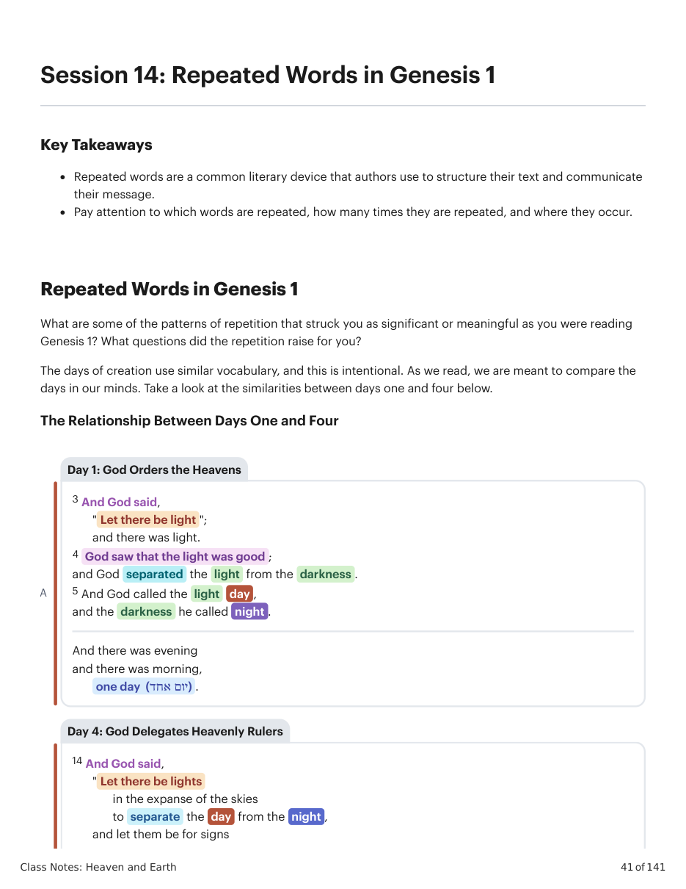
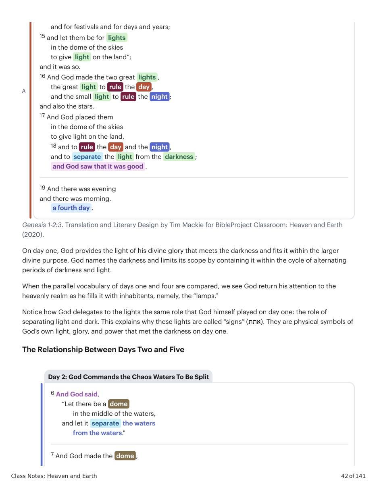
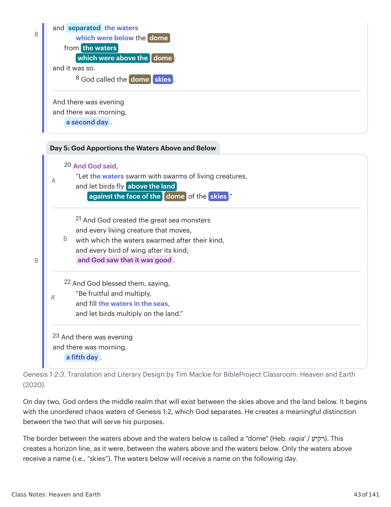
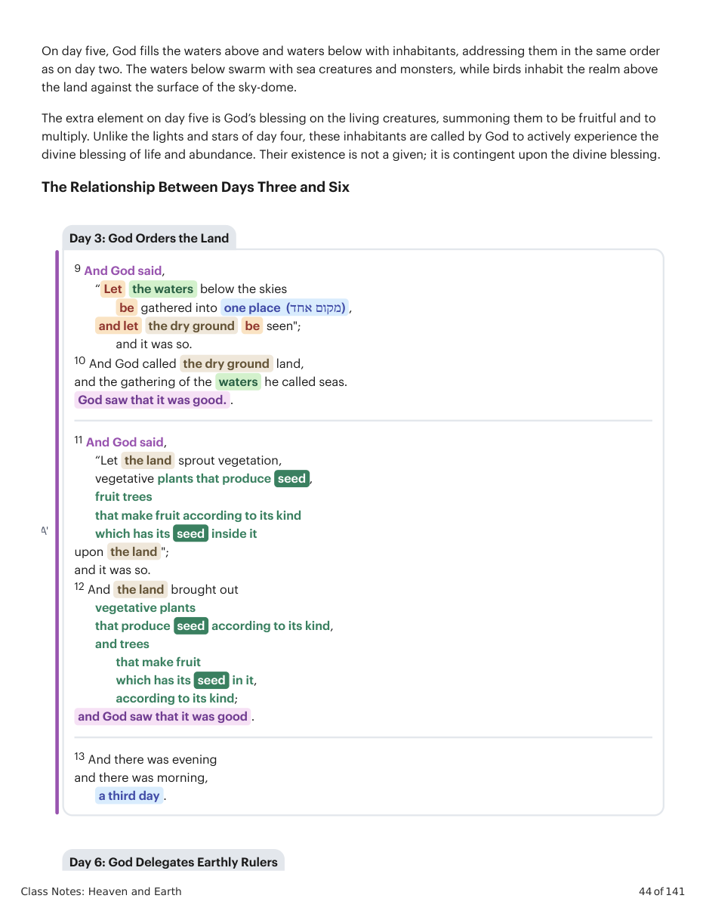
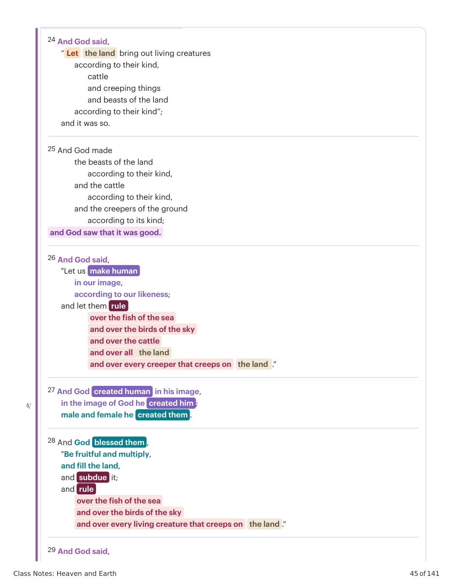
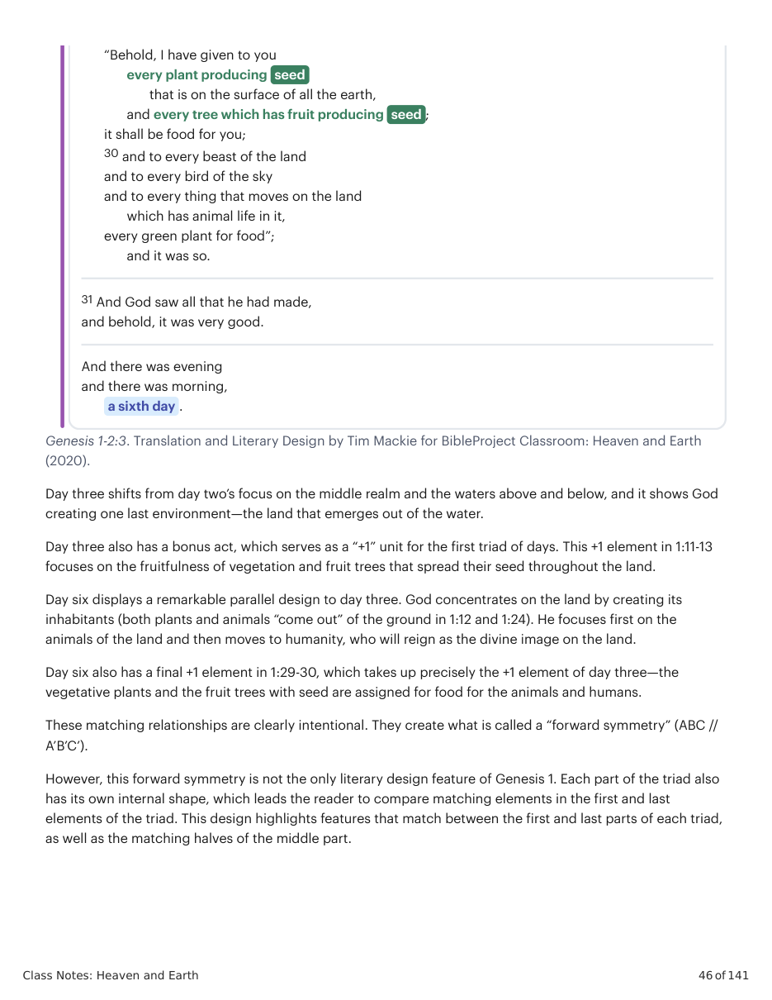
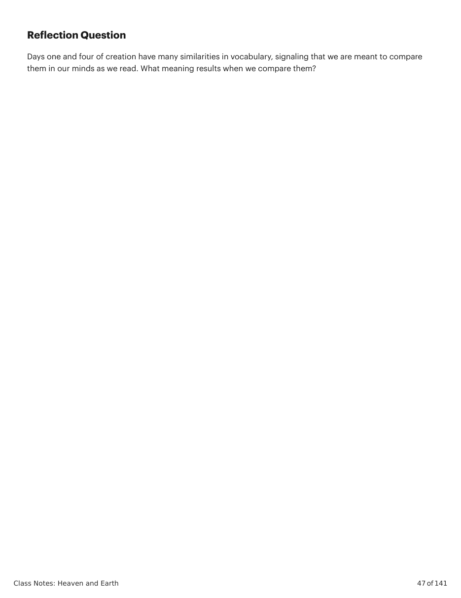

(2020).
On day one, God provides the light of his divine glory that meets the darkness and fits it within the larger divine purpose. God names the darkness and limits its scope by containing it within the cycle of alternating periods of darkness and light. When the parallel vocabulary of days one and four are compared, we see God return his attention to the heavenly realm as he fills it with inhabitants, namely, the “lamps.” Notice how God delegates to the lights the same role that God himself played on day one: the role of separating light and dark. This explains why these lights are called “signs” (אתת). They are physical symbols of God’s own light, glory, and power that met the darkness on day one. The Relationship Between Days Two and Five A and for festivals and for days and years; 15 and let them be for lights in the dome of the skies to give light on the land”; and it was so. 16 And God made the two great lights , the great light to rule the day , and the small light to rule the night ; and also the stars. 17 And God placed them in the dome of the skies to give light on the land, 18 and to rule the day and the night , and to separate the light from the darkness ; and God saw that it was good . 19 And there was evening and there was morning, a fourth day . 6 And God said, “Let there be a dome in the middle of the waters, and let it separate the waters from the waters." 7 And God made the dome , Day 2: God Commands the Chaos Waters To Be Split Genesis 1-2:3. Translation and Literary Design by Tim Mackie for BibleProject Classroom: Heaven and Earth
(2020).
On day two, God orders the middle realm that will exist between the skies above and the land below. It begins with the unordered chaos waters of Genesis 1:2, which God separates. He creates a meaningful distinction between the two that will serve his purposes. The border between the waters above and the waters below is called a "dome" (Heb. raqia' / רקיע). This creates a horizon line, as it were, between the waters above and the waters below. Only the waters above receive a name (i.e., “skies”). The waters below will receive a name on the following day. B and separated the waters which were below the dome from the waters which were above the dome ; and it was so. 8 God called the dome skies . And there was evening and there was morning, a second day . B A 20 And God said, “Let the waters swarm with swarms of living creatures, and let birds fly above the land against the face of the dome of the skies ." B 21 And God created the great sea monsters and every living creature that moves, with which the waters swarmed after their kind, and every bird of wing after its kind; and God saw that it was good . A' 22 And God blessed them, saying, “Be fruitful and multiply, and fill the waters in the seas, and let birds multiply on the land.” 23 And there was evening and there was morning, a fifth day . Day 5: God Apportions the Waters Above and Below On day five, God fills the waters above and waters below with inhabitants, addressing them in the same order as on day two. The waters below swarm with sea creatures and monsters, while birds inhabit the realm above the land against the surface of the sky-dome. The extra element on day five is God’s blessing on the living creatures, summoning them to be fruitful and to multiply. Unlike the lights and stars of day four, these inhabitants are called by God to actively experience the divine blessing of life and abundance. Their existence is not a given; it is contingent upon the divine blessing. The Relationship Between Days Three and Six A' 9 And God said, “ Let the waters below the skies be gathered into one place (מקום אחד) , and let the dry ground be seen"; and it was so. 10 And God called the dry ground land, and the gathering of the waters he called seas. God saw that it was good. . 11 And God said, “Let the land sprout vegetation, vegetative plants that produce seed , fruit trees that make fruit according to its kind which has its seed inside it upon the land "; and it was so. 12 And the land brought out vegetative plants that produce seed according to its kind, and trees that make fruit which has its seed in it, according to its kind; and God saw that it was good . 13 And there was evening and there was morning, a third day . Day 3: God Orders the Land Day 6: God Delegates Earthly Rulers A' 24 And God said, “ Let the land bring out living creatures according to their kind, cattle and creeping things and beasts of the land according to their kind”; and it was so. 25 And God made the beasts of the land according to their kind, and the cattle according to their kind, and the creepers of the ground according to its kind; and God saw that it was good. 26 And God said, "Let us make human in our image, according to our likeness; and let them rule over the fish of the sea and over the birds of the sky and over the cattle and over all the land and over every creeper that creeps on the land ." 27 And God created human in his image, in the image of God he created him ; male and female he created them . 28 And God blessed them , "Be fruitful and multiply, and fill the land, and subdue it; and rule over the fish of the sea and over the birds of the sky and over every living creature that creeps on the land ." 29 And God said, Genesis 1-2:3. Translation and Literary Design by Tim Mackie for BibleProject Classroom: Heaven and Earth
(2020).
Day three shifts from day two’s focus on the middle realm and the waters above and below, and it shows God creating one last environment—the land that emerges out of the water. Day three also has a bonus act, which serves as a “+1” unit for the first triad of days. This +1 element in 1:11-13 focuses on the fruitfulness of vegetation and fruit trees that spread their seed throughout the land. Day six displays a remarkable parallel design to day three. God concentrates on the land by creating its inhabitants (both plants and animals “come out” of the ground in 1:12 and 1:24). He focuses first on the animals of the land and then moves to humanity, who will reign as the divine image on the land. Day six also has a final +1 element in 1:29-30, which takes up precisely the +1 element of day three—the vegetative plants and the fruit trees with seed are assigned for food for the animals and humans. These matching relationships are clearly intentional. They create what is called a “forward symmetry” (ABC // A’B’C’). However, this forward symmetry is not the only literary design feature of Genesis 1. Each part of the triad also has its own internal shape, which leads the reader to compare matching elements in the first and last elements of the triad. This design highlights features that match between the first and last parts of each triad, as well as the matching halves of the middle part. “Behold, I have given to you every plant producing seed that is on the surface of all the earth, and every tree which has fruit producing seed ; it shall be food for you; 30 and to every beast of the land and to every bird of the sky and to every thing that moves on the land which has animal life in it, every green plant for food”; and it was so. 31 And God saw all that he had made, and behold, it was very good. And there was evening and there was morning, a sixth day .
Days one and four of creation have many similarities in vocabulary, signaling that we are meant to compare them in our minds as we read. What meaning results when we compare them?






